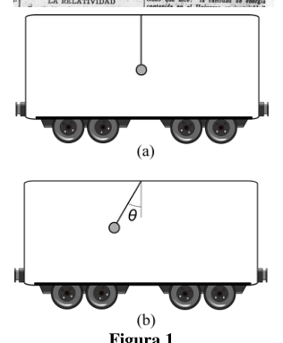
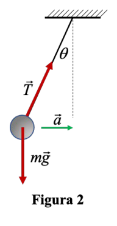
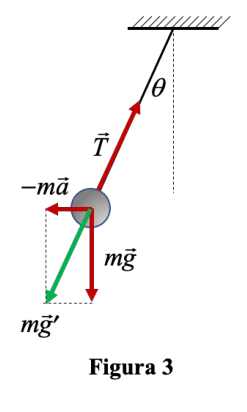

P1. Física en el tren. Albert Einstein y su segunda esposa visitaron España entre marzo y abril de 1923, cuando ya era público que le habían concedido el premio Nobel de Física. Su llegada en tren a Barcelona fue pintoresca, ya que olvidó avisar en qué tren llegaban, con lo que no hubo nadie esperándoles en la estación. Afortunadamente, a su llegada a Zaragoza, el 12 de marzo, fue recibido como merecía un genio de su nivel. Los largos viajes en tren de la época seguro que permitieron a Einstein meditar sobre sus teorías. De hecho, uno de sus experimentos mentales más famosos, que le ayudó a deducir su teoría de la relatividad, está relacionado con un tren y un rayo de luz. Si tienes ocasión de viajar en tren puedes realizar el siguiente experimento: Imagina un péndulo colgado en el interior del tren. Si el tren está parado, el péndulo permanecerá en su posición de equilibrio (Fig. 1a). Por el contrario, cuando el tren arranque, el péndulo se moverá “misteriosamente” debido a la inercia (Fig. 1b).
a) Indica en qué sentido está acelerando el tren. Considera que el tren se mueve con aceleración constante, , y el péndulo tiene una longitud y masa .
b) Dibuja el diagrama de cuerpo libre del péndulo, es decir, las fuerzas que actúan sobre él.
c) Calcula la relación entre la aceleración del tren, , y el ángulo de inclinación del péndulo, .
Este sencillo sistema puede usarse1 para calcular la distancia entre dos estaciones de tren, suponiendo que el desplazamiento del tren está compuesto por la concatenación de multitud de movimientos rectilíneos uniformemente acelerados y obteniendo la aceleración para cada uno de ellos a partir del ángulo que forma el péndulo con la vertical. Imaginemos que el tren parte del reposo y medimos el ángulo promedio en intervalos de 10 segundos, considerando que la aceleración se mantiene prácticamente constante en el intervalo. Obtenemos los siguientes valores:
| (s) | 0-10 | 11-20 | 21-30 | 31-40 | 41-50 |
|---|---|---|---|---|---|
| () | 3 | 5 | 7 | 6 | 4 |
d) Calcula qué distancia ha recorrido durante los 50 segundos.
Cuando el tren viaja con aceleración constante, , separamos ligeramente el péndulo de su posición de equilibrio.
e) Calcula el periodo de la oscilación resultante alrededor de la posición de equilibrio.
A partir de un determinado momento el tren se mueve con velocidad constante.
f) Calcula en este caso el periodo de la oscilación alrededor de la posición de equilibrio.
1 Claire Tham et al. “Using a Simple Pendulum to Calculate the Distance Between Two Train Stations”, The Physics Teacher 60, 748-751 (2022) https://doi.org/10.1119/5.0043205
P1. Solución
a) La masa suspendida del péndulo tiende a quedarse en reposo por efecto de la inercia mientras el tren acelera, siendo la componente de la tensión de la cuerda en dirección horizontal la que le hace moverse solidaria con el tren. Por tanto, como muestra la Fig. 2, el tren está acelerando hacia la derecha.
b) Las únicas fuerzas “reales” que actúan sobre el péndulo son el peso, , y la tensión de la cuerda, , con lo que el diagrama de cuerpo libre quedaría tal y como muestra la figura 2.
c) Aplicando la 2a Ley de Newton, tenemos
Descomponiendo en los ejes horizontal, , y vertical, , tenemos
De donde podemos despejar en función de ,
d) El espacio recorrido en cada tramo vendrá dado por la ecuación del desplazamiento con movimiento uniformemente acelerado,
Para cada tramo necesitamos saber la velocidad inicial, que vendrá dada por la aceleración y velocidad inicial del tramo anterior
con , puesto que el tren parte del reposo. A partir de las ecuaciones (3), (4) y (5) obtenemos
| 1 | 2 | 3 | 4 | 5 | |
|---|---|---|---|---|---|
| (s) | 10 | 10 | 10 | 10 | 10 |
| () | 3 | 5 | 7 | 6 | 4 |
| () | 0,51 | 0,86 | 1,20 | 1,03 | 0,69 |
| (m/s) | 0 | 5,1 | 13,7 | 25,7 | 36,0 |
| (m) | 25,5 | 94,0 | 197,0 | 308,5 | 394,5 |
De modo que el espacio total recorrido en los 50 primeros segundos será
e) En un péndulo sometido sólo a la aceleración de la gravedad, el periodo de oscilación viene dado por
Un observador montado en el tren es un observador no inercial (se mueve con velocidad no constante). Al arrancar el tren con una cierta aceleración , el observador montado en el tren ve que el péndulo se inclina sin que sobre él actúe aparentemente ninguna fuerza, por lo que decide inventarse una fuerza hacia atrás, , que denomina “fuerza de inercia” (Fig. 3). Esta es la misteriosa fuerza que parece empujarnos hacia atrás cuando viajamos en un tren que acelera. Pero esta fuerza es ficticia, no existe. Visto por un observador inercial exterior, fijo al suelo de la calle, lo que ocurre es que el tren acelera mientras que el pasajero tiende a mantenerse con velocidad constante. Por ello el pasajero necesita agarrarse a la barra del tren para no quedarse rezagado respecto del tren, y por tanto, caerse al suelo. Para el observador que viaja en el tren el péndulo está en equilibrio, por lo que el diagrama de fuerzas sobre el péndulo sería el mostrado en la figura 3, de modo que
El observador no inercial interpreta que el péndulo se orienta en la dirección de una gravedad “aparente” , mostrada en la figura 3, dada por
Por analogía con la expresión (7), sometido a esta “gravedad aparente”, al separarlo ligeramente de la posición de equilibrio el péndulo oscila con un periodo
A partir de (9) obtenemos el módulo de la gravedad aparente, ,
Y sustituyendo por la expresión obtenida en (3),
De modo que el periodo del péndulo que se mueve con aceleración viene dado por
f) Si el tren se mueve con velocidad constante, un observador montado en el tren será un observador inercial y por tanto aplicará las leyes de Newton como si estuviera en reposo. Por tanto, el periodo del péndulo será el dado por la expresión (7).
Se puede comprobar que esta expresión coincide con la (12) cuando (y por tanto ), como era de esperar.

Pendolo nel treno fermo e accelerante
Diagramma corpo libero pendolo (Fig 2)
FBD pendolo con forza d’inerzia (Fig 3)Topic: Newtonian Mechanics, Oscillations & Waves Metodi: Free-Body Diagram, Kinematic Equations, Vector Decomposition, Simple Harmonic Motion Analysis Competenze: Diagrammatic Reasoning, Mathematical Modeling, Physical Reasoning Objects: Pendulum Fonte: Testo (PDF) — p.2
P1. Fisica sul treno. Albert Einstein e la sua seconda moglie hanno visitato la Spagna tra marzo e marzo. Aprile 1923, quando era già pubblico che gli erano stati concessi il premio Il Nobel di fisica. Il suo arrivo in treno a Barcellona è stato pittoresco, perché Si dimenticò di segnalare con quale treno arrivarono, così non c’era nessuno che li aspettava.
- La stazione. Fortunatamente, all’arrivo a Saragozza, il 12 marzo, fu accolto come meritava un genio del suo livello. I lunghi viaggi in treno dell’epoca sicura che permettevano di Einstein meditare sulle sue teorie. Infatti, uno dei suoi esperimenti e che gli ha aiutato a dedurre la sua teoria della relatività, È legato a un treno e a un raggio di luce. Se avete l’occasione di viaggiare in treno, potete fare il seguente: Esperimento: Immaginate un pendolo appeso all’interno del treno. Se il treno Se il pendolo è fermo, rimane in posizione di equilibrio (Fig. 1a). Al contrario, quando il treno parte, il pendolo si muove misteriosamente a causa dell’inerzia (Fig. 1b).
a) Indica in che direzione il treno sta accelerando. Considera che il treno si muove a costante accelerazione, , e il il pendolo ha una lunghezza e una massa .
b) Disegna il diagramma del corpo libero del pendolo, cioè le forze che agiscono su di lui.
c) Calcola il rapporto tra l’accelerazione del treno, , e l’angolo di inclinamento del pendolo, .
Questo semplice sistema può essere utilizzato1 per calcolare la distanza tra due stazioni ferroviarie, supponendo che che il movimento del treno è composto dalla concatenamento di molteplici movimenti rettilini l’accelerazione per ciascuno di essi dall’angolo che forma l’angolo pendolo con la verticale. Immaginiamo che il treno parte dal riposo e misuriamo l’angolo medio in intervalli di 10 secondi, considerando che l’accelerazione è praticamente costante nell’intervallo. Noi otteniamo i seguenti valori:
| (s) | 0-10 | 11-20 | 21-30 | 31-40 | 41-50 |
|---|---|---|---|---|---|
| () | 3 | 5 | 7 | 6 | 4 |
d) Calcola la distanza percorsa durante i 50 secondi.
Quando il treno viaggia a costante accelerazione, , separamo leggermente il pendolo dalla sua posizione di equilibrio.
e) Calcola il periodo di oscillazione risultante intorno alla posizione di equilibrio.
A partire da un certo momento il treno si muove a velocità costante.
f) Calcola in questo caso il periodo di oscillazione intorno alla posizione di equilibrio.
1 Claire Tham et al. “Using a Simple Pendulum to Calculate the Distance Between Two Train Stations”, The Physics Teacher 60, La Commissione ha adottato una decisione che prevede che il Consiglio europeo di sicurezza possa prendere decisioni in merito a tali decisioni.
P1. Soluzione
a) La massa sospesa del pendolo tende a rimanere a riposo a causa dell’inerzia mentre il treno accelera, essendo la componente della tensione della corda in direzione orizzontale che lo fa muoversi in solidarietà con il treno. Pertanto, come mostra la figura. 2, il treno sta accelerando a destra.
b) Le uniche forze reali che agiscono sul pendolo sono il peso, , y la tensione della corda, , con cui il diagramma di corpo libero sarebbe rimasto come mostra la figura 2.
c) Applicando la seconda legge di Newton, abbiamo
Se si decompone in assi orizzontali, , e verticali, , si ottiene
Da dove possiamo chiarire in funzione di ,
d) Lo spazio percorso in ogni tratto sarà dato dall’equazione di spostamento in movimento accelerato uniformemente,
Per ogni tratto dobbiamo sapere la velocità iniziale, che verrà data dall’accelerazione e dalla velocità iniziale del precedente tratto
con , poiché il treno parte dal riposo. Da queste equazioni (3), (4) e (5) si ottiene
| 1 | 2 | 3 | 4 | 5 | |
|---|---|---|---|---|---|
| (s) | 10 | 10 | 10 | 10 | 10 |
| () | 3 | 5 | 7 | 6 | 4 |
| () | 0,51 | 0,86 | 1,20 | 1,03 | 0,69 |
| (m/s) | 0 | 5,1 | 13,7 | 25,7 | 36,0 |
| (m) | 25,5 | 94,0 | 197,0 | 308,5 | 394,5 |
Quindi il totale dello spazio percorso nei primi 50 secondi sarà
e) In un pendolo che è solo sottoposto all’accelerazione della gravità, il periodo di oscillazione è dato da
Un osservatore montato sul treno è un osservatore non inerziale (si muove a velocità non costante). Quando si parte il treno con una certa accelerazione , l’osservatore montato sul treno vede che il pendolo si inclina senza che apparentemente non agisca alcuna forza su di lui, quindi decide inventare una forza indietro, , che definisce la forza di Inerzia (Fig. 3). Questa è la misteriosa forza che sembra spingerci indietro quando Siamo in un treno ad alta velocità. Ma questa forza è immaginaria, non esiste. Visto da un osservatore inertile esterno, fissato al pavimento della strada, ciò che accade è che il treno accelera mentre il passeggero tende a mantenere la velocità costante. Per questo il passeggero deve aggrapparsi alla barra del treno per non restare indietro rispetto al treno, e quindi cadere a terra. Per l’osservatore che viaggia in treno il pendolo è in equilibrio, quindi che il diagramma delle forze sul pendolo sarebbe quello mostrato nella figura 3, Quindi
L’osservatore non inerziale interpreta che il pendolo si orienta in direzione di una gravità apparece , mostrato in figura 3, dato da
Per analogia con l’espressione (7) sottoposta a questa gravità apparente, separandola leggermente dalla posizione di equilibrio il pendolo oscilla con un periodo
A partire da (9) si ottiene il modulo della gravità apparente, ,
E sostituendo con l’espressione ottenuta in (3),
Quindi il periodo del pendolo che si muove con l’accelerazione viene dato da
f) Se il treno si muove a velocità costante, un osservatore montato sul treno sarà un osservatore Inerziale e quindi applicherà le leggi di Newton come se fosse a riposo. Il periodo di il pendolo sarà il dato per l’espressione (7).
Si può verificare che questa espressione coincida con la (12) quando (e quindi ), come Era da aspettare.
Pendila sul treno fermo e in frenata
*Diagramma corpo libero pendolo (Fig. 2) *
FBD pendolo con forza d’inerzia (Fig. 3)
Topic: Newtonian Mechanics, Oscillations & Waves Metodi: Free-Body Diagram, Kinematic Equations, Vector Decomposition, Simple Harmonic Motion Analysis Competenze: Diagrammatic Reasoning, Mathematical Modeling, Physical Reasoning Objects: Pendulum Fonte: Testo (PDF) — p.2
P1. Physicist on the train. Albert Einstein and his second wife visited Spain between March and April 1923, when it was already public that he had been awarded the prize Nobel Prize in physics. His arrival by train to Barcelona was picturesque, since He forgot to tell me what train they were coming with, so there was no one waiting for them. At the station. Fortunately, upon his arrival in Zaragoza on March 12, He was received as a genius of his level deserved. The long train journeys of the safe era allowed Einstein meditating on his theories. In fact, one of his experiments He was the first to write about the theory of relativity. It’s related to a train and a lightning strike. If you have the opportunity to travel by train you can do the following: Experiment: Imagine a pendulum hanging from the inside of the train. If the train The pendulum is still, the pendulum will remain in its equilibrium position (Fig. 1a). On the contrary, when the train starts, the pendulum will move mysteriously due to inertia (Fig. 1b).
(a) Indicate the direction in which the train is accelerating. It considers that the train is moving at constant speed, , and the The pendulum has a length and mass .
(b) Draw the free-body diagram of the pendulum, i.e. the forces who act upon him.
(c) Calculate the ratio of the train’s acceleration, , to the angle of inclination of the pendulum, .
This simple system can be used1 to calculate the distance between two train stations, assuming that the that the movement of the train is composed of the concatenation of multitude of rectal movements The acceleration of the current is the same as the acceleration of the current. the vertical pendant. Let’s say the train leaves the rest and we measure the average angle at intervals of 10 seconds, Whereas acceleration is practically constant at interval. We get the the following values:
| (s) | 0-10 | 11-20 | 21-30 | 31-40 | 41-50 |
|---|---|---|---|---|---|
| () | 3 | 5 | 7 | 6 | 4 |
(d) Calculate the distance travelled during the 50 seconds.
When the train is travelling at constant speed, , we slightly separate the pendulum from its position of The balance.
(e) Calculate the period of oscillation around the equilibrium position.
From a certain moment on, the train moves at a constant speed.
(f) Calculate the period of oscillation around the equilibrium position.
1 Claire Tham et al. “Using a Simple Pendulum to Calculate the Distance Between Two Train Stations”, The Physics Teacher 60, The Commission has also adopted a number of proposals for the European Parliament and the Council.
P1. Solution
(a) The suspended mass of the pendulum tends to remain at rest by effect of inertia The train is accelerating, the rope tension component being the horizontal direction that makes you move in solidarity with the train. Therefore, as Fig. 1 shows the figure. 2, the train is speeding to the right.
(b) The only real forces acting on the pendulum are weight, , y la the tension of the rope, , with which the free body diagram would be as follows: The following table shows the figures for the following categories:
c) Applying Newton’s second law, we have
By breaking down into the horizontal, , and vertical, axes, we have
Where we can clear according to ,
(d) The space travelled in each section shall be given by the equation of motion uniformly accelerated,
For each stretch we need to know the initial velocity, which will be given by the acceleration and velocity initial of the previous tranche
with , since the train leaves at rest. From the equations (3), (4) and (5) we get
| 1 | 2 | 3 | 4 | 5 | |
|---|---|---|---|---|---|
| (s) | 10 | 10 | 10 | 10 | 10 |
| () | 3 | 5 | 7 | 6 | 4 |
| () | 0,51 | 0,86 | 1,20 | 1,03 | 0,69 |
| (m/s) | 0 | 5,1 | 13,7 | 25,7 | 36,0 |
| (m) | 25,5 | 94,0 | 197,0 | 308,5 | 394,5 |
So the total space travelled in the first 50 seconds will be
(e) In a pendulum subjected only to gravitational acceleration, the period of oscillation is given by
A train-mounted observer is a non-inercial observer (moving at non-constant speed). When starting the train at a certain speed , el observador montado en el tren ve que el péndulo se He bends without apparent force acting upon him, so he decides inventing a force backwards, , which refers to the force of The following is a list of the main types of energy sources: 3). This is the mysterious force that seems to push us back when We were traveling on a high-speed train. But this force is fictitious, it doesn’t exist. I saw it. By an outside inertial observer, fixed to the street floor, what happens is The train is accelerating while the passenger tends to keep up with speed. It’s constant. That is why the passenger needs to hold onto the train bar to avoid falling behind the train and therefore falling to the ground. For the observer travelling on the train the pendulum is in balance, so The force diagram on the pendulum would be as shown in Figure 3, So that
The non-inercial observer interprets that the pendulum is oriented in the direction of gravity appearing , shown in Figure 3, given by
By analogy with the expression (7), subjected to this apparent gravity, by slightly separating it from the The pendulum oscillates with a period
From (9) we get the module of apparent gravity, ,
And replacing with the expression obtained in (3),
So the period of the pendulum moving at is given by
(f) If the train is moving at constant speed, an observer mounted on the train shall be an observer. It’s inert and will therefore apply Newton’s laws as if it were at rest. The period of the The pendulum is the given for the expression (7).
This expression can be found to be in line with (12) when (and therefore ), as follows: It was a wait.
Pending it in the stationary and accelerating train
Diagramma corpo libero pendolo (Fig 2)
FBD pendolo con forza d’inerzia (Fig 3)
Topic: Newtonian Mechanics, Oscillations & Waves Metodi: Free-Body Diagram, Kinematic Equations, Vector Decomposition, Simple Harmonic Motion Analysis Competenze: Diagrammatic Reasoning, Mathematical Modeling, Physical Reasoning Objects: Pendulum Fonte: Testo (PDF) — p.2